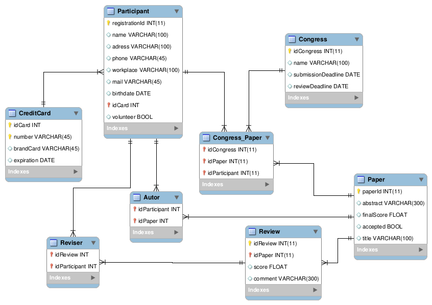
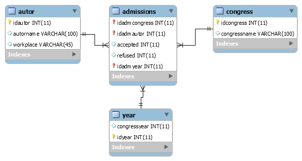
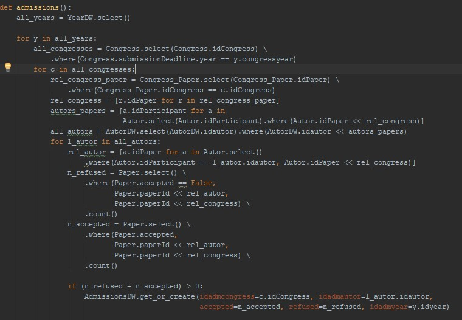
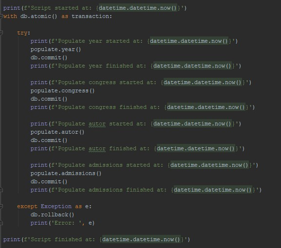

Migrando dados de uma base relacional para Star Schema
Na etapa anterior foi feito a modelagem do Star Schema onde se utilizou dados ficticios para testar. Após ter definido como seria a base DW, chegou a hora de migrar as informações do modelo relacional para essa nova base.
O modelo relacional está da seguinte forma:

Figura 1. Diagrama Entidade Relacionamento do modelo relacional.
Sendo que a base DW está no formato abaixo:

Figura 2. Diagrama Entidade Relacionamento do modelo Star Schema.
A carga do modelo star schema com os dados relacional será atráves de uma aplicação ETL(Extract, Transform, Load). Essa aplicação irá ler os dados, realizar a normalização e inserir no banco DW. Para criação dessa aplicação foi utilizado a linguagem de programação Python com a biblioteca Peewee.
Para cada tabela destino foi criado um metodo para fazer a migração, as tabelas autor, year e congress, foram mais simples por não depender de muitas relações.

Figura 3. Métodos para carga de autor, year e congress.
Já a tabela Admissions, é o compilado de dados das tabelas Congress, Congress_paper, Paper, Autor e Year, o que elevou sua complexidade em relação as outras tabelas.

Figura 4. Método para carga de Admissions.
Para administrar todos esses métodos, foi criado uma classe main em que todos eles passavam por um controle de transação.

Figura 5. Main com Commit e Rollback para controle das transações.